I start by performing a full port scan to discover which services are running.
nmap -sVC -p- --open -sS --min-rate 5000 -v -n --stats-every=5s -Pn -oN mirai_scan <IP>Services discovered include:
On port 32400, I find a login page for Plex. I try to register a new account, but I receive a warning indicating that registration is disabled.
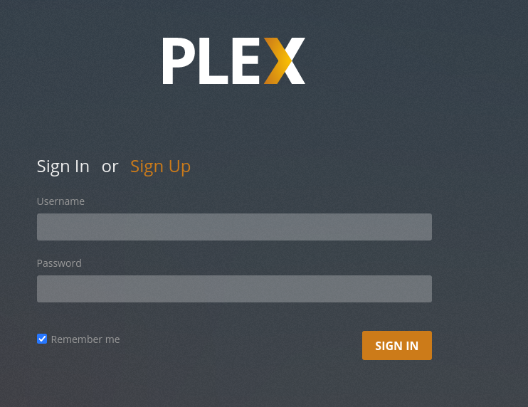
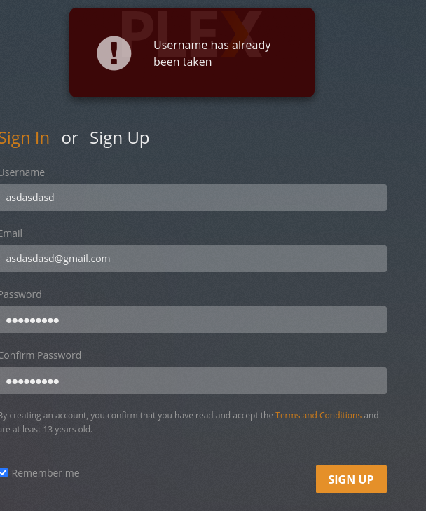
Port 80 returns a blank page. I analyze the response with Burp Suite and notice the header X-Pi-Hole.
Pi-hole is a DNS sinkhole that protects devices from unwanted content without client-side software.
The default route to the admin dashboard is /admin, where I can log in using the default credentials:
pi:raspberryI reuse the same credentials for SSH and obtain a shell as the user pi.
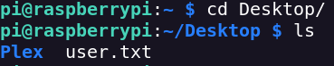
I run sudo -l to see which commands I can execute as root. There are some interesting possibilities.
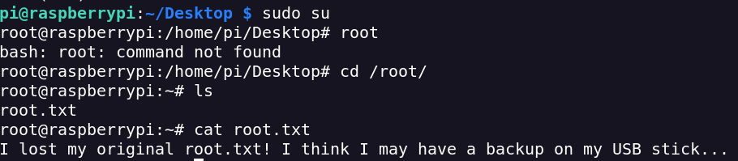
I check connected devices with lsblk and discover a USB stick mounted at /media/usbstick.
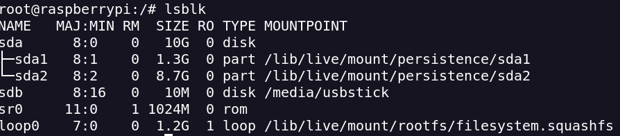
Inside the USB stick, I find an important archive that needs forensic analysis.
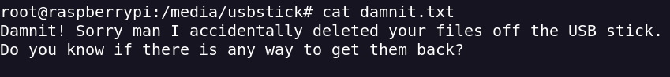
I create a disk image of the USB stick using dcfldd to preserve integrity:
dcfldd if=/dev/sdb of=/tmp/usb.dd hash=md5,sha1 hashlog=/tmp/hashlog.txt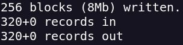
I verify the image by comparing the hashes:
dcfldd if=/dev/sdb vf=/tmp/usb.dd verifylog=/tmp/verifylog.txt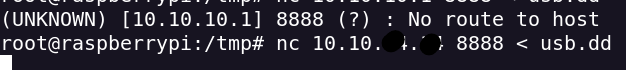
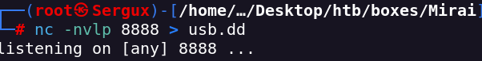
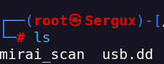
Using fls, I list all files and directories in the disk image. I can identify the root.txt flag.
I use the strings command to extract sequences of printable characters from the image, which helps in analyzing potential hidden content.
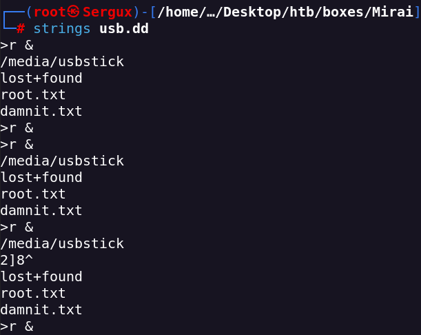